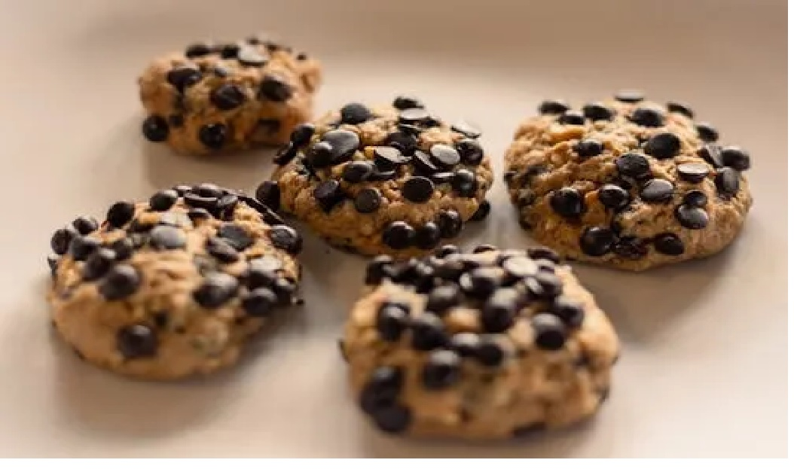

Chocolate Chip Cookies

Ingredients
- 1/2 cup unsalted butter, softened
- 1/2 cup packed brown sugar
- 1/2 cup granulated sugar
- 1 large egg
- 1 teaspoon vanilla extract
- 1 1/2 cups all-purpose flour
- 1/2 teaspoon baking soda
- 1 cup semi-sweet chocolate chips
Step-by-Step Instructions
- Preheat your oven to 350°F (175°C) and line a baking sheet with parchment paper.
- In a large bowl, cream together the softened butter, brown sugar, and granulated sugar until smooth.
- Beat in the egg and vanilla extract until well combined.
- Stir in the flour and baking soda until a soft dough forms.
- Fold in the chocolate chips evenly.
- Drop spoonfuls of dough onto the prepared baking sheet, spacing them 2 inches apart.
- Bake for 10-12 minutes until the edges are golden brown. Let cool before eating.